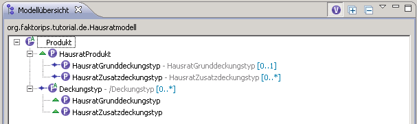
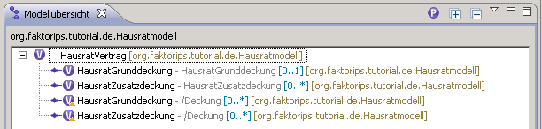

Die Modellübersicht setzt sich standardmäßig aus zwei verschiedenen Ansichten zusammen. Ansicht Nummer eins zeigt das ausgewählte Projekt und alle Projekte die davon referenziert werden an. Dargestellt werden hierbei die Vererbungshierarchie und alle direkten Beziehungen. Da diese Ansicht für größere Projekte und Projekthierarchien schnell unübersichtlich wird, existiert eine Ansicht die sich auf die Darstellung der Beziehungen innerhalb eines Projekts konzentriert. Diese Ansicht stellt die Beziehungen, welche in referenzierten den Projekten definiert sind, als vererbte Beziehungen innerhalb des ausgewählten Projekts dar. Im Folgenden werden diese Ansichten Komplettansicht und Vererbungsansicht genannt.
Diese beiden Screenshots zeigen die Struktur (Komplettansicht) des Tutorial-Projekts "Hausratmodell" an. Als referenziertes Projekt kann man noch das "Grundmodell" erkennen. Um die Masse der dargestellten Objekte zu verringern werden Produkt- und Vertragsbausteintypen separat dargestellt. Die Umstellung erfolgt durch den rot markierten Button. Dem ausgewählten Typ entsprechend wird das Icon angepasst.
Kommen wir nun zu der angezeigten Struktur. Faktor-IPS Bausteintypen werden wie üblich durch die  und
und
 Symbole gekennzeichnet. Knoten die mit einem
Symbole gekennzeichnet. Knoten die mit einem  -Symbol gekennzeichnet sind, sind Subtypen des Vaterknoten. Analog dazu
sind Knoten mit einem
-Symbol gekennzeichnet sind, sind Subtypen des Vaterknoten. Analog dazu
sind Knoten mit einem  -Symbol Beziehungen (Aggregationen oder Master-to-Detail-Kompositionen), die innerhalb
des Vaterknoten definiert sind.
-Symbol Beziehungen (Aggregationen oder Master-to-Detail-Kompositionen), die innerhalb
des Vaterknoten definiert sind.


Dieser Screenshot zeigt ein Beispiel für die Vererbungsansicht. Wie an den Labeln zu erkennen ist,
werden nur noch Elemente aus dem Projekt "Hausratmodell" angezeigt. "HausratVertrag" ist das neue
Root-Element und hat die Beziehungen des alten Root-Elements "Vertrag" geerbt. Durch das Overlay-Icon
 werden Elemente markiert, die eine von außerhalb dieses Projekts geerbte Beziehung darstellen.
werden Elemente markiert, die eine von außerhalb dieses Projekts geerbte Beziehung darstellen.


Die Label der Knoten enthalten immer den qualifizierten Namen des zu Grunde liegenden Bausteins und das Projekt in dem der Baustein definiert ist. Liegt ein Element unterhalb eines Assoziationsknotens werden auch der Rollenname und die zugehörigen Kardinalitäten angezeigt. D.h. die Kinder eines Beziehungsknoten zeigen den Namen der Beziehung an, mit welcher Sie vom Vaterknoten assoziiert werden.
Abgesehen vom Namen des Bausteins sind die Label frei über das Menü definierbar.

Vererbungsansicht: Markiert Beziehungsknoten die durch eine vererbte Beziehung zustande gekommen sind.